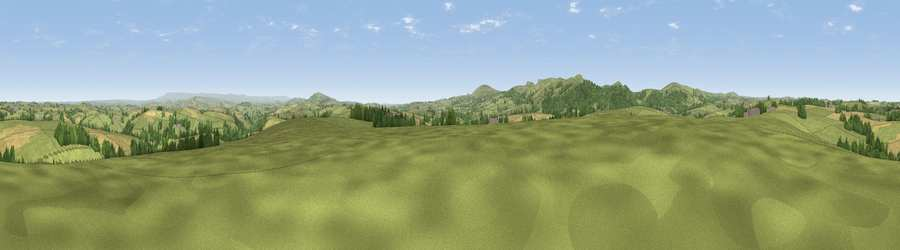

Viewpoint near Coad's Green
#13116 in England · top 23% of its area beats it · near Coad's GreenThe view, rendered

A 360° render of this exact spot computed from the terrain model, tree cover and land cover — summer colours, afternoon light, calibrated against photographs of famous viewpoints. Real trees, hedges and buildings will differ in detail.
The panorama
Grey silhouette: terrain skyline in each direction (720 bearings, Earth curvature and refraction included). Dashed green: skyline with trees (+15 m) and buildings (+8 m) as obstacles. Blue strip: how far the ground is visible on each bearing.
Where the view opens
Wedge length = distance to the farthest visible ground on that bearing (vegetation-aware). Rings at 10, 25 and 50 km.
What fills the view
67% grassland · 16% cropland · 16% woodland ·
Angular shares of the visible panorama (visual magnitude), not map area. Landscape diversity 0.39 (0–1 Shannon).
Key numbers
More beautiful places nearby
The staircase of upgrades: each row has a higher view potential than everything closer. Driving times are estimates from straight-line distance, calibrated against real road routing — check an actual route before setting out.
| Place | Direction | Drive | Score |
|---|---|---|---|
| Larrick Hill | ENE · 2 km | ~6 min | 60.1 |
| Viewpoint near North Hill | SW · 3 km | ~8 min | 64.7 |
| Hawk's Tor | WSW · 4 km | ~9 min | 67.0 |
| Viewpoint near North Hill | W · 4 km | ~10 min | 68.6 |
| Viewpoint near Henwood | SW · 5 km | ~10 min | 76.2 |
| Viewpoint near Henwood | SSW · 6 km | ~13 min | 77.3 |
| Caradon Hill | SSW · 7 km | ~15 min | 78.5 |
| Kit Hill | SE · 11 km | ~20 min | 80.3 |
50.57508, -4.41604 · source: screening · position refined by local search. Computed location — check access rights before visiting.